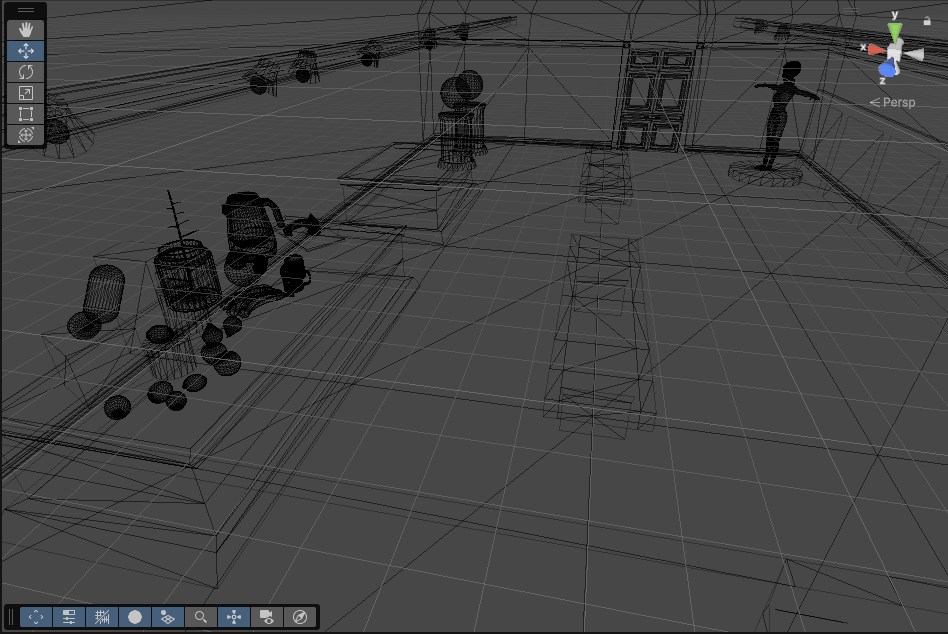
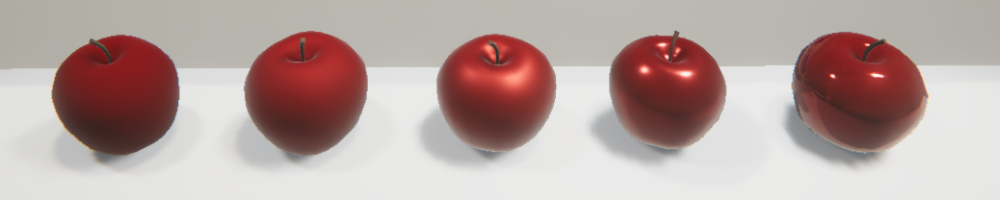
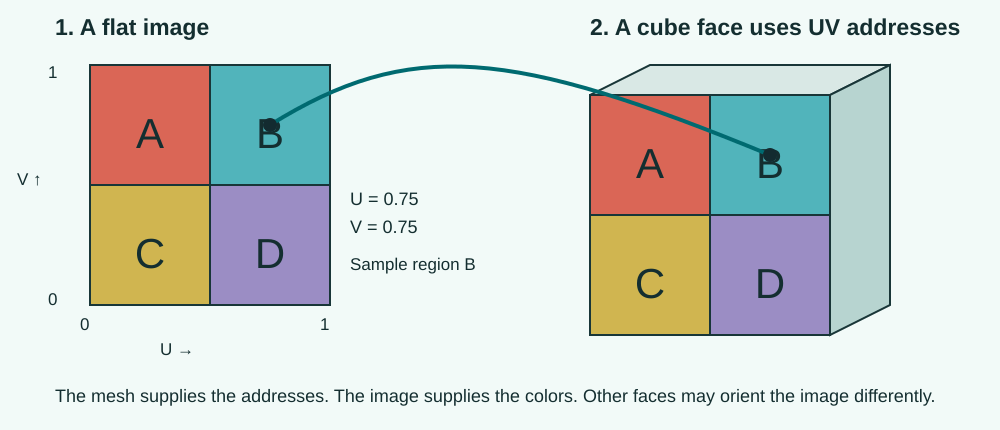

Introduction to Creative Core
In Unity User Interface, you connected player actions to visible feedback. Creative Core shifts attention to the appearance and presentation of an experience: how its surfaces, lighting, motion, cameras, audio and interface work together. Today you will keep object shapes simple and change what their surfaces appear to be made of.
Non-metal
Broad highlight
Non-metal
Sharper highlight
Same smoothness as B
Different reflection response
Color image
Repeated on a cube
How was this made?
- A and B have the same shape and color. Why do their highlights differ?
- B and C have the same smoothness. What makes their surfaces look different?
- Does the cube need extra geometry to show its repeating pattern?
New conceptCreative Core
Creative Core introduces visual and audio authoring inside Unity, without requiring C# for these exercises. Its missions cover shaders and materials, lighting, animation, VFX, cameras, post-processing, audio, UI and prototyping. A guided project applies skills to an existing design brief; an independent project applies them to your own design. For this lecture, use the supplied material gallery rather than your previous gameplay project.
The pathway also develops creator habits: choose assets you have permission to use, retain their license and attribution information, consult documentation for the installed Unity version, and evaluate work against a clear visual intention. “Make this look like glazed ceramic” is more useful than changing sliders until something looks interesting. We will judge the result by comparing surfaces under the same lighting.
Unity offers guided-project briefs such as an alien game shop, a kitchen and an escape room. You can explore those choices in Select your guided project; choosing a larger project is not an extra submission for this lecture.
New conceptShader, material and texture
A shader is the program that calculates how a surface is drawn. A material selects that shader and supplies settings, such as color and smoothness. A texture is an image the material can use to vary a property across the surface. One shader can draw both a red plastic cup and a brass ornament when their materials supply different settings.
New conceptRender pipeline
A render pipeline is the system that turns the scene into the displayed image. Shaders must work with that system. Today’s gallery uses the Universal Render Pipeline (URP), so our materials use URP shaders. A material made for a different pipeline may appear bright pink instead of showing its intended surface.
New conceptLight and surface appearance
A lit surface changes its shading in response to scene lighting. An unlit surface displays its color or image without calculating that lighting response. A polished surface has sharper highlights than a rough one, but polishing plastic does not turn it into metal. We will vary these properties one at a time so the differences are visible.
Prior-knowledge recap
In Unity 3D Essentials: Construct the ball, you assigned a material and adjusted color, Metallic and Smoothness. Those controls are a recap. The new work is tracing the rendering chain, choosing a compatible shader, controlling shared assets, and mapping images onto surfaces. A visual material still does not determine friction or bounce.
Learning outcomes
By the end of this lecture, you will be able to:
- Explain how Creative Core connects creative disciplines through a project brief.
- Trace a visible object from mesh to renderer, material and shader.
- Create independent materials and predict the effect of shared edits.
- Compare lit/unlit, metallic/non-metallic and rough/smooth surfaces, then justify material choices for a new visual brief.
- Apply a texture, control its tint and repetition, and diagnose common material problems.
Teaching plan
Pre-class: download/import. Approximately 60 minutes in class: introduction 7, rendering 8, sharing 9, surfaces 10, textures 14, transfer brief and review 12. Record and export after the practical work. Adjust pacing from observed student progress; this is an estimate, not a measured completion time.
Prepare the gallery before class
Plan for approximately one hour of class work after the project is ready. Record the final demonstration and export the quiz report afterward.
Complete the download and first import before class. The archive is a complete Unity project, not a package to import into the UI game. All material edits below are made outside Play mode.
Open a working copy of the material gallery.
- Download the official CreativeCore_Shaders_U6.3 project ZIP and extract it to a local folder. In Unity Hub, use Add → Add project from disk and select the extracted project folder containing Assets, Packages and ProjectSettings. Open with Unity 6.3; allow the initial import to finish.
- In the Project window, search for TutorialScene_Shaders and open that scene. Select Banana in the Hierarchy and press F with the Scene view focused. Navigate around the workbench; the supplied gallery has no Game-view navigation controls.
- Create Assets/Lecture12 and a Materials subfolder. Use File → Save As to save the scene as Assets/Lecture12/MaterialStudy.unity. Keep the original tutorial scene as your reference.
Explanation
A scene copy protects the original arrangement of objects, but it still refers to the same material assets. Editing an original material can therefore affect both scenes. In the next steps, create your own materials before experimenting. Saving the scene records object references; it does not duplicate the assets those references point to.
Refresher (1)Scene and asset
A scene places objects; a material asset can be used by objects in several scenes. A separate scene is not a separate copy of every material.
Connect meshes, renderers and shaders
Create a simple comparison beside the workbench. Keep its objects near one another so lighting differences do not hide material differences.
Trace what makes a sphere visible.
Predict first. If drawing is disabled, will the sphere’s collision boundary also disappear? Say your prediction before changing the setting; afterward, explain whether the observation supports it.
- Use GameObject → 3D Object → Sphere. Rename it Study A. Select the Move tool (W) and place it in an uncluttered, lit part of the workbench. Keep scale (1, 1, 1). Frame it with F in Scene view. From the side, align the bottom of the sphere with the workbench surface. This is the baseline position for the comparison row.
- In the Inspector, locate Mesh Filter and Mesh Renderer. Temporarily disable Mesh Renderer using its checkbox. Observe that the object disappears but its Transform and Sphere Collider remain. Re-enable the renderer.
- In Assets/Lecture12/Materials, right-click and select Create → Material. Name it Study_Lit, select Universal Render Pipeline/Lit in its Shader dropdown, and drag it onto Study A. Expand Mesh Renderer → Materials to confirm the assignment.
Explanation
The Mesh Filter references the mesh: vertices and triangles that describe the sphere’s shape. The Mesh Renderer draws that shape with its assigned material. The material references a shader and supplies values to it. Disabling drawing does not delete the geometry or disable the collider. A collider is a separate physics boundary.
Refresher (1)Rendering chain
Mesh Filter → mesh geometry; Mesh Renderer → material assignment; material → shader and settings. A color change belongs to appearance, not collision.
Study A disappears only while Mesh Renderer is disabled; its Sphere Collider remains listed. Re-enable the renderer. Its material slot must show Study_Lit. If another object changes color, check which renderer received the material.

Compare a lit surface with an unlit surface.
Predict first. Which sphere should respond when the preview lighting changes? Will turning Scene Lighting off make the scene completely dark? Say your prediction before changing the setting; afterward, explain whether the observation supports it.
- Duplicate Study A as Study B. In Transform, keep its Y and Z values equal to Study A and set X to Study A’s X plus 1.5. Create Study_Unlit, choose Universal Render Pipeline/Unlit, and assign it to Study B. Equal scale, height and spacing make the comparison easier to read.
- Set the Base Map color of both materials to the same medium turquoise, such as #008C91. Keep Base Map texture slots empty. Orbit the Scene view to compare the lit sphere’s highlights and shading with the flatter unlit sphere.
- In the Scene view toolbar, hover over controls to find the Scene Lighting tooltip. With the view stationary, turn it off, compare the spheres, then turn it on again. Off uses the Editor’s preview lighting; it does not mean “no light.” Look for a change in the lit sphere’s shading or highlight while the unlit sphere remains comparatively flat. Finish with Scene Lighting enabled.
Explanation
URP/Lit uses lighting and surface properties to calculate the visible color. URP/Unlit does not use that scene-light calculation, so it is useful for deliberately flat graphics. Unlit does not mean invisible, transparent, or “always pure RGB on the monitor”: display processing can still affect the final image. Scene Lighting controls the editor’s preview lighting; it does not rewrite the scene’s lights.
Choose the shader before setting up a complex material. Different shaders expose different properties, so switching later can require reassigning textures or values.
With Scene Lighting enabled, Study A should show lighting-based shading; Study B should appear flatter. If the difference is subtle, first confirm the two shader names and equal colors, then move the pair together into the same clearly lit area. Compare at one fixed viewpoint before orbiting. Do not treat a subtle lighting change as a failed shader.
Manage shared and independent materials
An object copy and a material copy are different operations. Test the difference before building your final composition.
Recall the prefab asset and scene instances from Unity 3D Essentials: several scene objects can refer to one reusable asset. Here the shared asset is a material. Duplicating a GameObject copies its material reference; it does not automatically create another material.
Observe an intentional shared-material edit.
Predict first. Both material slots point to Study_Lit. How many spheres will change when that asset’s color changes? Say your prediction before changing the setting; afterward, explain whether the observation supports it.
- Assign Study_Lit to both Study A and Study B. Select Study B and inspect Mesh Renderer → Materials → Element 0; it should point to the same material asset as Study A.
- Select Study_Lit in the Project window and change its Base Map color to orange. Observe both spheres changing. Undo the color change so the material returns to turquoise.
Explanation
Both renderers hold a reference to Study_Lit. The material settings are not automatically copied into each object. Changing the asset updates every renderer using it, including uses in other scenes when they are opened. This sharing is useful for a consistent style, but unwanted when only one object should change.
Give each sphere an independent surface.
Predict first. After assigning a duplicate material only to Study B, which sphere should an edit affect? Say your prediction before changing the setting; afterward, explain whether the observation supports it.
- Select Study_Lit in the Project window and duplicate the material using Cmd/Ctrl + D. Rename the copy Study_Polished and assign it only to Study B.
- Change Study_Polished to orange. Confirm Study B changes and Study A stays turquoise. Restore Study_Polished to the same turquoise as Study_Lit for the next controlled comparison.
- Find a magenta example on the supplied workbench. Inspect its shader before changing anything. If it uses Standard, note the pipeline mismatch. Return to your study spheres and verify both use Universal Render Pipeline/Lit.
Explanation
A duplicate material starts with the same settings but has its own asset identity. Reassigning the copy breaks the link between the two spheres’ appearances. A pink object can indicate an unsupported, missing or failed shader; it is not proof that the Base Map color is pink. In this gallery, Standard examples demonstrate a Built-in/URP mismatch. Switching a simple material to URP/Lit can fix that mismatch, but complex materials may also need texture properties reassigned.
Refresher (1)Material sharing
Duplicate an object to make another object. Duplicate and reassign its material when the new object needs independent surface settings.
Changing Study_Polished affects B only. If A changes too, inspect both material slots: A must reference Study_Lit and B must reference Study_Polished. Finish with matching turquoise colors. This establishes independent materials before the next experiment.
Compare rough, polished and metallic surfaces
Use identical geometry and nearby positions. Change one property at a time so you can explain what caused the appearance to change.
Separate smoothness from metalness.
Predict first. If you polish plastic, should you change Smoothness, Metallic, or both? What should remain constant to test your prediction? Say your prediction before changing the setting; afterward, explain whether the observation supports it.
- Set Study_Lit and Study_Polished to Workflow Mode: Metallic, Surface Type: Opaque and Metallic: 0. Leave texture slots empty. Set Study_Lit Smoothness to 0.15 and Study_Polished Smoothness to 0.85.
- Keep the view fixed and compare A and B. On B, look for a smaller, sharper highlight; on A, a broader, softer highlight. A highlight is the bright reflection of a light source. Orbit both together to find a useful reflection angle, then stop and compare again. Both materials remain non-metallic.
- Duplicate Study B as Study C. Keep Y and Z equal to B, and set X to B’s X plus 1.5. Duplicate Study_Polished as Study_Metal, assign it only to C, set Metallic to 1, and keep Smoothness at 0.85. Compare B/C at the same view and save.
Explanation
Smoothness describes how consistently microscopic parts of a surface face the same direction. Rough surfaces spread reflected light over more directions, giving broad highlights; smoother surfaces concentrate it. A surface can reflect light this way without being metal: polished plastic has highlights too.
Metallic changes the kind of surface response. A non-metal returns some light as a diffuse color—a broad, scattered color visible across its surface—and also has surface reflections. An ideal metal has essentially no diffuse component; its appearance comes from reflected light, which the metal can color. In the Metallic workflow, Base Map supplies the non-metal’s diffuse color or the metal’s reflection color. That is why raising Metallic is not a shortcut for polishing plastic.
These values are comparison settings, not universal recipes for every plastic or metal. Lighting and the surrounding environment affect what you can see. If the metal looks dark, inspect what it has to reflect before changing unrelated properties.
Refresher (1)Smoothness and metalness
A smooth non-metal and a smooth metal can both have strong highlights. Smoothness alone does not identify the substance.
A/B should differ mainly in highlight sharpness; B/C should differ in how the surface reflects its surroundings. Check the material assignments and keep B/C at Smoothness 0.85 with matching Base Map colors. A dark metal may be reflecting dark surroundings: inspect it from another angle in the lit gallery before changing its color. You are comparing appearance, not expecting a particular pixel color.

Map images onto surfaces
A solid color supplies one value across the surface. A texture lets that value vary from one location to another. Use a repeating image first, then examine why a model-specific texture needs a matching mesh.
Apply a repeating image and control its tint.
Predict first. Does adding a texture change the cube’s geometry? If you fit three repeats across a face instead of one, will the pictured stones look larger or smaller? Say your prediction before changing the setting; afterward, explain whether the observation supports it.
- Create a cube named Study Texture near your spheres. Create a material named Study_Textured, use URP/Lit, set Metallic to 0 and Smoothness to 0.3, and assign it to the cube.
- Before using a photographic texture, download the four-region UV test texture. Drag it into Assets/Lecture12 in the Project window, then into Study_Textured’s Base Map texture slot. Set Base Map color to white and Tiling to (1, 1). Frame one cube face: identify the A, B, C and D regions. The diagram below traces the top-right region to its place on the face; other cube faces can have different orientations.
- Change Base Map color from white to turquoise. Predict which colored regions will darken, then inspect the result. Restore white. Now open Assets → CreativeCore_Shaders → Textures → Tiled Textures and replace the test image with Pavement_SmallMoss_Albedo.png. Here albedo means the surface-color image: it is the appropriate starting map for Base Map, unlike a normal or smoothness map.
- With the pavement image assigned, compare Tiling (1, 1) and Tiling (3, 3) on the same cube face without changing object scale. Try Offset X: 0.5 and identify a feature that shifts. Restore Offset to (0, 0). Finish with white tint and Tiling (3, 3), then save.


Explanation
A UV coordinate is an address in an image. U runs horizontally and V vertically. In our test image, the address U = 0.75, V = 0.75 lies in the top-right B region. The cube mesh already contains UV addresses, so its surface samples that region and displays B at the matching location. We are using an existing UV layout, not authoring one.
The Base Map image and color tint combine by multiplication. White leaves each color channel unchanged; a darker tint reduces channels. A tint cannot turn a black region into a bright white one. If the image unexpectedly looks green or dark, inspect the color beside the texture slot before editing the file.
UV coordinates identify where a mesh samples the 2D image. Tiling scales those coordinates, and Offset shifts them. On this cube with a repeating texture, increasing tiling from 1 to 3 fits more repeats across a face, making the visible pattern smaller. It does not add triangles or enlarge the object. Repetition also depends on the texture’s Wrap Mode; if it stretches at the edge, check that the imported texture uses Repeat.
Refresher (1)Texture and tint
The image supplies spatial variation; the color control tints that image. White is the neutral tint.
The test image produces recognizable labeled regions; the pavement image replaces those regions with surface detail. White tint restores the image’s original colors. At 3×3, the same face contains more, smaller repeats than at 1×1. If it smears instead of repeating, select the image in the Project window, set Wrap Mode to Repeat in its import Inspector, and select Apply.
Recognize a texture that belongs to one model.
- Find the Ellen character in the gallery, frame her in Scene view, and inspect the adjacent texture exhibit. Choose one clearly recognizable clothing-colored area in the flat image and locate the corresponding clothing region on her model. Use this as the same image-to-surface trace you just performed with region B on the cube.
- Select the character’s visible mesh and inspect its material assignment. Explain why putting the character’s image on your cube would not place each feature correctly. Leave Ellen unchanged: this is a transfer of the UV-address idea, not another modeling task.
Explanation
A model-specific UV layout assigns different parts of the mesh to selected regions of an image. The flat image can be an atlas: several surface regions packed into one texture. Ellen’s clothing samples its designated area; her skin samples another. Your cube has a different UV layout, so the same image would put those features in different places. The image alone does not know where a face, sleeve or shoe belongs.
Other maps can describe smoothness, metalness or surface-normal direction instead of color. They require the right shader input and import settings. We will keep those maps, transparency and Shader Graph authoring for later work; today’s required task uses solid and Base Map materials.
Create a four-surface composition
Use the study row as your reference, then make two material choices for a new visual brief. This replaces repeating every earlier experiment in the recording; it does not add another project.
Compose, test and record your material study.
- Keep your four-object study row intact. Below or beside it, duplicate one sphere and one cube as Rubber sample and Brass sample. Give each its own duplicate material. Brief: the first must suggest dark matte rubber; the second warm polished brass. Choose the shader, Base Map color, Metallic and Smoothness yourself. Clear texture slots for this solid-surface comparison. Do not copy a supplied numerical recipe.
- Before adjusting controls, say which properties you expect to differ and why. Change one property at a time, compare under the same gallery lighting, and revise at least one choice based on what you see. Success: rubber has a dark diffuse surface with broad, subdued highlights; brass has warm-colored, relatively sharp reflections. Shape alone does not establish the material.
- Record about 2 minutes: show the study row briefly, then focus on your two new samples. Explain your shader and material choices; show one before/after revision and why it helped. On Study Texture, show 1×1 versus 3×3 tiling, explain the image-to-surface relationship, and restore 3×3 with white tint.
- Finish with the study row and both new samples visible, separate material assets assigned, and no unintended intersections or floating objects. Save MaterialStudy.unity outside Play mode. Keep the project locally; submit the recording and quiz PDF only.
Explanation
The original row isolates particular properties. The two new samples test whether you can combine those properties to meet a visual intention. Your justification matters more than matching one exact value: name the intended surface, explain your choice, identify the visual evidence, and describe your revision. Use the troubleshooting section if the result disagrees with your prediction.
This is an editor-based material demonstration; Play mode is not required. Leave time after the class experiments to record the final explanation. The recording is not part of the estimated hands-on comparison time.
Diagnose material problems
Use the symptom to decide which part of the rendering chain to inspect.
| Symptom | Check | Reason |
|---|---|---|
| Two objects change together | Material references in Mesh Renderer | They may share one asset. |
| Material controls are disabled | Whether you selected the built-in default material | Create and assign an editable material asset. |
| Object is bright pink | Shader and pipeline compatibility; Console errors | A shader can be unsupported, missing or fail to compile. |
| Texture is tinted | Base Map color | White preserves the color image. |
| Metal looks unexpectedly dark | Lighting and reflected surroundings | A reflective surface needs something visible to reflect. |
| Changing color has no visible effect | Selected material and renderer slot | A child mesh or another slot may own the visible surface. |
What to submit
Submit two files. Use the demonstration sequence in Create a four-surface composition.
- StudentID_L12.mp4 — an approximately 2-minute narrated demonstration following the applied brief.
- StudentID_L12_quiz.pdf — check all eight quizzes, read their feedback, retry mistakes, enter your name and student ID below, then choose Export results → Save as PDF.
Keep your Unity project locally. The PDF records checked answers and self-reported progress; the recording demonstrates the practical work.
Official sources
Procedures target Unity 6.3 and URP. Official illustrations may show earlier Editor layouts. This lecture selects the foundation topics from the larger mission; it does not require completing the entire pathway.